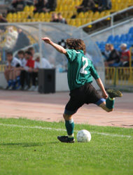

Goal! Score Big with this Introduction to Soccer
In This Article: Shoes (Cleats) Here are the basics Artificial turf fields Indoor soccer fields Shinguards Shinguards are made from different materials, which vary in protection and comfort Uniform
The A–Z on Soccer shoes (cleats), shin guards and uniforms.
Shoes (Cleats)
The right shoes (cleats) are the most essential piece of equipment for any soccer player. The type of shoe your child needs completely depends on the type of field on which he or she will be playing. It’s a good idea to check with the coach or league before purchasing your child's soccer shoes, as certain facilities will only allow play with certain shoes.
Here are the basics:
Natural turf fields require cleats with molded plastic soles dotted with studs that give the players traction. The shape and size of the studs varies from blade-like to conical, depending on the firmness of the field.
Artificial turf fields
Require a special type of cleat called a turf shoe. Turf shoes have hard rubber soles with a pattern of small studs. They can also be used for hard outdoor surfaces.
Indoor soccer fields
Require shoes with flat, rubber soles. They are designed to be non-marking, so they don't damage the court surface. (Bonus: they also double as very fashionable street wear!)
Shinguards
Shinguards protect the lower leg from injury with a hard outer casing over a soft interior. The guard that covers at least 75% of your child’s shin. Guards come in three styles:
- Shin socks are soccer socks with built in guards. They're perfect for younger players who don't need a lot of protection, and their all-in-one design means fewer pieces of equipment to misplace.
- Slip-in shinguards are comprised of a compression sleeve that holds the guards in place on the leg. They are a good, lightweight, basic guard.
- Ankle shin guards are highly recommended for younger players. They feature padded support on each side of the foot to protect the ankle, and are held in place with a stirrup.
Shinguards are made from different materials, which vary in protection and comfort:
- Foam rubber guards are lightweight, flexible and mold comfortably to the player's leg. They are less durable but suitable for younger players.
- Plastic shinguards are lightweight, inexpensive and provide great protection. However, they're often the least comfortable.
- Polyurethane shinguards are heavier, sturdier and provide excellent protection but they’re not as comfortable.
- Ethylene Vinyl Acetate shin guards are best for advanced players. They provide the most shock absorption and protection and are very comfortable.
Uniform
A typical soccer uniform consists of a jersey, shorts and socks. The cost of a uniform is included in many league fees. If you're buying a uniform on your own, be sure to check with your coach or league regarding styles, colors or other requirements.
- Jersey — A soccer jersey can be either long or short sleeved. Choose one made from a wicking fabric to keep your child extra dry and comfortable.
- Shorts — Comfort and freedom of movement are key. The shorts should hit just above or at the knee.
- Socks — soccer socks should fit snugly to hold shinguards in place. They should reach to just below the knee and completely cover your child's shinguards.
Related Articles
Resources
Other Articles
Related Categories